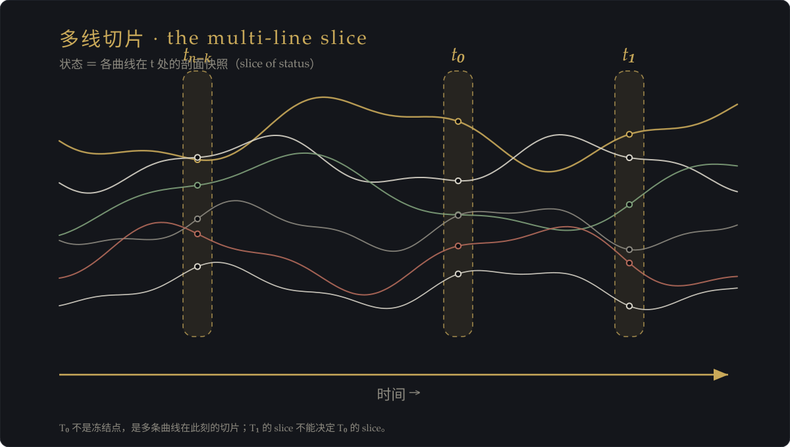
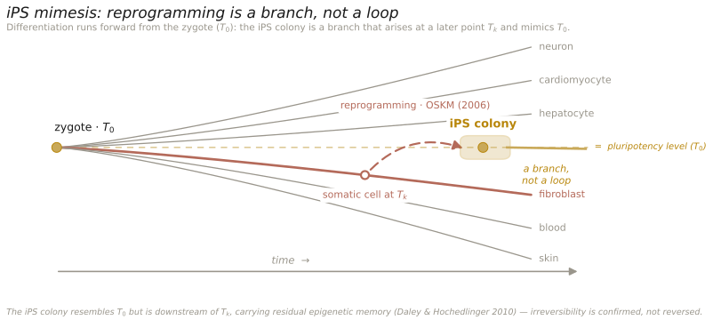

2026-09-30 · 时间、结构、负熵与 iPS 拟态——一条思维链（刻碑）
母本：主人 0930 亲述之思维链（含对岸 ima 整理稿）。完整对话存档候补录（主人云「稍后保存对话再整理」）。 本篇为时间系列之第四块：承《冻结不可逆》（T₀ 冻结→多线切片）与《时间路标律》（簿记员→路标）。 科学锚 · 已核验（0930，本地 Crossref 对撞；对岸 ima 首核）： ① 爱丁顿·时间之箭：Eddington, The Nature of the Physical World（Gifford Lectures 1927；CUP 1928），第 IV 章。 ② 霍金·三时间箭头：Hawking, A Brief History of Time，第 9 章——热力学／心理学／宇宙学；指向一致为条件命题（无边界＋弱人择下成立），非无条件事实。 ③ 山中 iPS（2006）：Takahashi & Yamanaka, Cell 2006, 126(4):663–676. doi:10.1016/j.cell.2006.07.024（四因子 Oct3/4·Sox2·c-Myc·Klf4）。 ④ Daley · 表观记忆（2010）：Kim et al., Nature 2010, 467(7313):285–290. doi:10.1038/nature09342（iPS 保留组织来源表观记忆）。 另拆 Hochedlinger：Stadtfeld & Hochedlinger, Genes Dev 2010, 24:2239–2263. doi:10.1101/gad.1963910（综述，非原始证据，作背景）。
一 · 起点：结构决定行为
想在 t₀→t₀₊₁ 做”不一样的事”，前提是 t₀ 之前已积累了”足够不同”的结构；若结构没变，t₀₊₁ 能做的事，在 t₀ 时刻就已被确定。
- t₀ 不是自由的起点：t₀ 的状态由前面所有状态累积而成，下一步能做什么，由凝固的结构决定，而非”自由意志”。
- 结构不变，可能性就不变：只”等时间过去”，结构不变，未来的可能性不会自己打开。
- 学习不是时间的赠礼：“时间能解决”是幻觉；突破”被结构锁死”的唯一杠杆，是在 t₀ 之前投入结构建设。
二 · 时间观升级：从”簿记员”到”路标”
- 牛顿式（簿记员）：时间＝均匀流逝、与物质运动无关的独立背景参数；方程可逆、不区分过去未来。
- 现代物理学（路标）：爱丁顿 1927 提出”时间之箭”；霍金三支箭头——热力学（熵增）、心理学（记得过去非未来）、宇宙学（宇宙膨胀），三支指向一致。
- 决定权移交：是时间决定了你能做什么，而不是你决定时间做什么。
三 · 收束：时间＝状态的符号表征

拆四件：
| 件 | 义 |
|---|---|
| 状态 | 多条演化曲线的剖面快照 |
| 符号 | 人贴的标签（t₀, t₁ …） |
| 表征 | 用符号框架表示”状态在变” |
| 不可逆 | 信息含量不对称：t₁ 含 t₀ 的信息，t₀ 不含 t₁ |
| 箭头 | 符号编码天然单向：只能编码”过去”、不能编码”未来”——是语法限制，不是物理定律 |
时间是状态的符号表征；结构是符号的累积；能力建设是符号系统的更新；熵增是符号系统不可抗的退化方向。
四 · 实证攻击：iPS 重编程”看似逆转”
山中伸弥（2006）用 4 转录因子把体细胞重编程为多能干细胞，表面看”逆回”了胚胎样状态。三问：有普遍意义吗？是完全逆转吗？这是不是”细胞成功学”？
五 · 反击：iPS 不是逆转，而是 tₖ 处的分支拟态

科学事实（Daley / Hochedlinger，2010，†候核）：重编程不完全——残留表观遗传记忆：血液来源的 iPS 更易变回血液；残留甲基化强到仅凭甲基化特征即可识别组织来源；偏向分化回原组织。
重定义：iPS 并没有回到 t₀，而是从下游状态点 tₖ 走出一条分支，这条分支恰好有点像 t₀——但它不是 t₀。
| 判 | 义 |
|---|---|
| 出发点是 tₖ | 带历史残留，不是 t₀ |
| 方向是分支非回路 | 时间之箭没倒转，只换了条向前延伸的线 |
| “像” ≠ “是” | 功能相似，出身结构不同 |
| 本质＝拟态 | 模仿 t₀ 状态，却带着 tₖ 的历史痕迹 |
这不但没推翻”时间不可逆”，反而成了最硬的实证证据——连人工强推的”逆转”都逆转不干净。
六 · 落点：能力建设 ＝ 负熵 ＝ 在历史残留上开新分支
- 时间流逝是熵增，能力建设是负熵。
- 时间之箭是统计涌现、非定律强制——负熵不是对抗时间，是对抗统计概率：在熵增主流里单点逆流，以环境增熵为代价。
- 结构一旦形成无法清零，只能被”覆盖”。
- 能力建设不是回到 t₀，而是在历史残留之上盖一个能让下一步自由的新结构。
- 负熵不是擦除过去，而是让历史遗留结构不再主导当前决策。
七 · 一句总纲
时间是状态的符号表征；结构是符号的累积；能力建设是符号系统的更新；而熵增，是符号系统不可抗的退化方向。 iPS 拟态证明了时间不可逆的真实性——连人工强推的逆转都逆转不干净。 所谓”成长”，不是回到从前，而是在历史残留之上开一条新的分支。
八 · 再推一步：拟态的自由度
iPS 能开的分支多宽，由 tₖ 的结构划定。于是”能力建设”有了可操作定义——
- 负熵的可操作定义：具体地增加 tₖ 处可达分支的维数（不是抽象的”对抗熵增”）。
- 历史残留＝约束项：每条新分支都带着 tₖ 的拉力（像 iPS 偏向回原组织）；“自由度”是被残留支配权打折后的净自由。
- 能力建设的真实目标：不是”开一条新分支”（那只是拟态），而是降低旧残留对分支选择的支配权重——让 tₖ 处的分支集合，从”被出身锁死”变为”由当前结构决定”。
成长 ＝ 在 tₖ 处扩大分支空间，同时降低历史残留对分支选择的支配权重。 前者是”开新路”，后者是”解除旧路的引力”。
九 · 刻碑与落点
主碑·时间符号表征律 ＋ 推论一·iPS 拟态律（逆转＝分支拟态；不可逆之实证）＋ 推论二·负熵分支律·拟态自由度（成长＝开分支＋减残留引力）。三条入术语碑 Λεξικόν。
待办：① 完整对话存档 → 本页据母本补录（主人云「稍后保存对话再整理」）；② 科学锚（Eddington/霍金/山中/Daley）逐条核卷期；③ talk-with-agents 出版之 HTML 包装候模板确认。
十 · 续篇（0930 主人两观察）：负熵双路径
观察一 · 儿童发展＝细胞重编程之重演：儿童早期＝全能态（可塑性最高、符号近空白、几乎任何分支可开）；发展＝分化（结构累积、自由度收窄、能力变强）。儿童学得快，不因”输入多”，而因结构松、旧框架约束弱——每学一样几乎都在开新分支。 → 修正：松动的稀缺不是自然属性，而是”过度巩固”的后天结果；可塑性本身是一项需要维护的能力（比”不断学新东西”更根本）。
观察二 · 扫盲运动＝重编程，但支持”不同路径”： - iPS 路径＝退回式：体细胞 → 退到多能态（t₀ 附近）→ 再分化；先抹身份再重建，代价极大、多失败。 - 扫盲／成人学习路径＝叠加式：不识字成人 → 直接长出读写，不退回空白态；代价低、成功率高。 → 局限暴露：iPS 的”退回再分化”只是拟态路径之一，不是主路径；常见高效的负熵是叠加式生成——在 tₖ 现有结构上直接长新分支，松动成本低得多。
合起来 → 双路径模型：
| 路径 | 代表 | 代价 / 成功率 | 何时用 |
|---|---|---|---|
| 退回式 | iPS 拟态 | 高松动成本 / 多失败 | 需根本性重塑时 |
| 叠加式 | 扫盲 · 儿童学习 · 日常 | 低 / 高 | 日常成长主流 |
能力建设 ＝ 依结构状态择路：需根本重塑 → 退回式；日常成长 → 叠加式（原地长新分支、保持旧结构）。
推论（agent 协作方法论）：① 别只堆新信息，先制造结构松动；② 失败＝松动成本，非净损失；③ 优化”引入条件”优于”引入内容”（先问：旧框架松了吗？密度会不会打不进？该不该先清空造窗口？）；④ 主动创造松动窗口，优于被动等挫折。
落点：术语碑立 「负熵双路径律」（细则 iPS 拟态律）。
十一 · 再推（0930 主人续）：路径诊断——如何知道该走哪条
认识论循环：用当前结构去判断”当前结构是否需要被摧毁”，结论天然偏向”不需要”——结构只能”看到”它自己支持的判断，倾向于确认自己还行、还够用。∴ 真正该退回式重塑的人，往往最晚意识到。
∴ 判据只能是客观信号，不能是主观需要感：
| 信号 | 走哪条 |
|---|---|
| 现有符号系统仍在产出新分支（只是量／方向不对）· 挫折可逆、局部 · 清晰的困惑（知道卡在哪） | 叠加式（结构健康） |
| 反复叠加都”打在水面上”· 挫折重复、周期性（同题绕回）· 模糊的不安（说不清卡哪，就是不对劲） | 退回式（结构已锁死） |
关键区分：指向问题的“清晰的困惑”＝健康信号（叠加式）；指向自身的“模糊的不安”＝根本重塑的警报（退回式）——此时结构本身已是问题的一部分。
最经济策略 · 定期”模拟退回”（趁结构还能松时，测试它还能不能松）： - 小成本模拟退回 ＝ 跨界 ／ 推翻旧框架之推演 ／ 彻底换视角； - 模拟退出后旧结构能轻易恢复＋带新视角 → 叠加式够用；发现”根本回不去 ／ 旧的已不可恢复” → 早该退回式。 - 把”可塑性维护”从被动（等警报）变为主动（定期诊断）。
落点：术语碑立 「路径诊断律」 ＋ 推论 「模拟退回律」。
十二 · 黑天鹅住进来（0930 主人续）：弹性优先
黑天鹅先冲击”信号判据”：判据是事后的——“清晰的困惑”与”模糊的不安”在当下分不清；真正的黑天鹅（需要退回的那一刻），信号恰恰是你最认不出来的。∴ 上轮”客观信号”仍有隐藏假设（世界可预测、信号可靠）；黑天鹅一进来，假设碎。
对核心命题的冲击：黑天鹅＝t₀₊₁ 的路径不来自 t₀ 的结构，而来自结构完全无法预见的扰动。调和＝结构只能确定它认识范围内的可能性；黑天鹅在结构边界之外。
修正：t₀₊₁ 能做的事在 t₀ 已被确定——前提是没有黑天鹅越过结构的边界。 结构最危险的错误，是把自己能感知的边界，误认为世界真实的边界。
双路径被改造：退回分两种—— - 主动退回（可选、可计划）＝ iPS 拟态 ／ 定期模拟退回诊断； - 被动退回（黑天鹅强加、最剧烈）＝ 结构边界被击穿、旧框架瞬间失效。
大多数真正需要根本重塑的时刻，不是”我主动选择退回”，而是”黑天鹅替我完成了退回”。你能决定的不是”要不要退”，而是”边界被击穿时，你有没有足够的可恢复性”。
重心转移：能力建设从”主动诊断路径” → 为不可预测的被动退回储备恢复力。这才是负熵对抗不确定性的真正形式。
落点：结构决定 t₀₊₁，只在结构边界之内成立；黑天鹅是越过边界者。你无法预测它、也无法靠信号判断它何时来——你能做的，是让结构具备”被击穿后仍能重组”的恢复力。
落点：术语碑立 「黑天鹅边界律」 ＋ 推论 「恢复力律」。